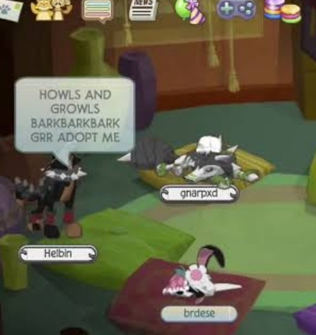

~~~~~~~~~~~~~~~~~~~~~~~~~~~~~~~~~~~~~~~~~~~~~~~~~~~~~~~~~~A GUIDE TO BEING A DESIRABLE ORPHAN~~~~~~~~~~~~~~~~~~~~~~~~~~~~~~~~~~~~~~~~~~~~~~~~~~~~~~~~
Parents usually like orphans who are vulnerable or injured. Here are some ideas for what you could type in the chat to attract parents:___________________________________*whimpers and licks paw with shard of glass in it*
*shivers* *is cold* *has a 106 fever*
__________________________*cries* *wipes blood off cut* *itches fleas*
*coughs* *sneezes softly* *breathes shakily* *lifts head weakly*
~~~~~~~~~~~~~~~~~~~~~~~~~~~~~~~~~~~~~~~~~~~ALL OF THESE ARE KIND OF CLICHE LOL~~~~~~~~~~~~~~~~~~~~~~~~~~~~
Sometimes it's better to be cute in a CHEERFUL way, like
__________________________________________________________________________________________*chases tail* *growls playfully* *catches butterfly*

^^^^^or you could try a more aggressive approach haha
It doesn't hurt to just ASK!
~~~~~~~~~~~~~~~~~~~~~~~~~~~~~~~~~~~~~~~~~~~~~~~~~Obviously you should try to come up with a trait that aligns with your species!!!~~~~~~~~~~~~~~~~~~~~~~~~~~~~~~~~~~~~~~~~~~~~~~~~~~~~~~~~~~~~~~
back - read some success stories!
...or if you've had ENOUGH of this cringe nonsense...i get that